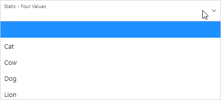
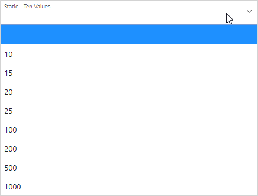
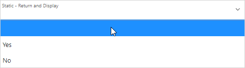

15.1.3 Creating Page-Level Items
Create page-level items in Page Designer in either the Rendering tab or by adding an item from the Gallery.
- Creating a Page-Level Item from the Rendering Tab
- Adding a Page-Level Item from the Gallery
- Creating a Static List of Values
- Creating a Cascading List of Values
- Creating a Shuttle Item on the Form Page in Page Designer
Parent topic: Managing Page-Level Items
15.1.3.1 Creating a Page-Level Item from the Rendering Tab
To create a page-level item from the Rendering tab:
See Also:
Parent topic: Creating Page-Level Items
15.1.3.2 Adding a Page-Level Item from the Gallery
To create a page-level item by adding if from the Gallery:
See Also:
Parent topic: Creating Page-Level Items
15.1.3.3 Creating a Static List of Values
To create a static list of values:
Example 15-1 Four Values Displayed in Alphabetical Order
This example shows the Static Values dialog with four
values defined: Lion, Dog, Cow,
and Cat. The return value of each entry is capitalized.
Sort at Runtime is set to On so that the list
displays alphabetical order.
Description of the illustration static_four_values.png
In a running application this select list would look similar to the following illustration.
Description of the illustration static_4_values_run.png
Example 15-2 Values Displayed in the Order Listed
This example shows the Static Values dialog with ten
values defined: 10, 15, 20,
25, 50, 100,
200, 500, 1000, and
10000 which display in the order listed. The return value of
each entry equals the display value.
Description of the illustration static_10_values.png
In a running application this select list would look similar to the following illustration.
Description of the illustration static_10_values_run.png
Example 15-3 A List of Values with Having Both a Return and Display Value
This example shows the Static Values
dialog with two values defined. The first value has a Display
Value of Yes and a Return
Value of Y. The second value has a
Display Value of No and a
Return Value of N
Sort at Runtime is set to Off to make
sure Yes always displays first.
Description of the illustration static_display_return.png
In a running application this select list would look similar to the following illustration.
Description of the illustration static_display_return_run.png
Parent topic: Creating Page-Level Items
15.1.3.4 Creating a Cascading List of Values
By creating a cascading list of values (LOV), one item on a page determines the list of values for another item. App Builder includes cascading LOV support for the following item types: Select List, Shuttle, Checkbox, Radio Group, Popup LOV, and List Manager.
You create a cascading LOV by creating two items. To populate the second item, you specify a Cascading LOV Parent Item when running the Create Item Wizard or by editing the item's attributes.
The following example demonstrates how to create two related select lists where the value of the first list populates the second.
To create a cascading list of values:
Parent topic: Creating Page-Level Items
15.1.3.5 Creating a Shuttle Item on the Form Page in Page Designer
DEPT table that shows which
employees are assigned to a given department. Then, you create a shuttle item that lists
employees alphabetically to make it easier to assign employees to a
department.
To create a shuttle item on a form:
Parent topic: Creating Page-Level Items